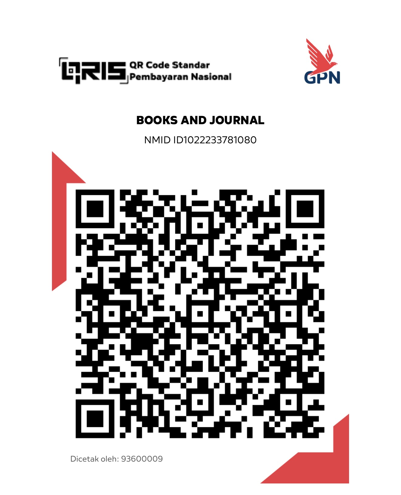

MetaboQuest memerlukan JavaScript. Buka file ini dengan Google Chrome (bukan pratinjau WhatsApp/Drive/File Manager).
MetaboQuest disediakan gratis untuk mendukung pembelajaran biokimia. Jika berkenan, Anda dapat memberikan dukungan sukarela melalui QRIS berikut.
